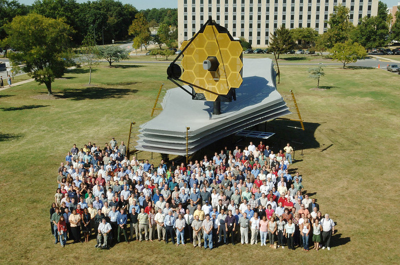

Explorando o Universo: O Telescópio Espacial James Webb

O telescópio espacial James Webb é uma maravilha da engenharia moderna e uma ferramenta essencial para a exploração do cosmos. Projetado para superar os limites de seu predecessor, o Hubble, o Telescópio Espacial James Webb (JWST, na sigla em inglês) promete revolucionar nossa compreensão do universo desde seu lançamento previsto para [data estimada de lançamento]. Nomeado em homenagem a James E. Webb, um dos principais Clique aqui administradores da NASA durante o programa Apollo, este telescópio representa uma nova era na astronomia e na astrofísica.
O Legado de James E. Webb

James Edwin Webb, nascido em 7 de outubro de 1906, foi um administrador público americano que serviu como o segundo administrador da NASA de 1961 a 1968, um período crítico na história da exploração espacial. Webb desempenhou um papel fundamental na Clique aqui condução do programa Apollo, que culminou com a chegada do homem à lua em 1969. Sua liderança visionária e compromisso com a excelência técnica foram fundamentais para o sucesso da missão Apollo. Além disso, Webb também foi um defensor incansável da exploração espacial como uma ferramenta para promover o progresso científico e a compreensão humana do universo. Seu nome foi escolhido para homenagear sua contribuição notável para a exploração espacial e sua visão de ampliar os horizontes da humanidade além dos confins da Terra.
O Telescópio Espacial James Webb: Uma Visão Além do Hubble
O telescópio espacial James Webb representa um salto significativo em relação às capacidades de observação do Hubble, que revolucionou nossa compreensão do cosmos desde seu lançamento em 1990. Clique aqui Com um espelho primário de 6,5 metros de diâmetro, o JWST é mais de seis vezes maior que o do Hubble, permitindo uma coleta de luz muito maior e, portanto, uma visão mais nítida e detalhada do universo distante. Além de seu tamanho impressionante, o JWST é equipado com instrumentos avançados que cobrem uma ampla gama de comprimentos de onda, desde o infravermelho próximo até o médio. Isso permitirá que os astrônomos estudem objetos celestes que são invisíveis ou obscuros para o Hubble devido à expansão do universo e à absorção de poeira interestelar.
Objetivos Científicos do JWST

O telescópio espacial James Webb tem uma lista impressionante de objetivos científicos que prometem expandir significativamente nosso conhecimento sobre o universo. Alguns desses objetivos incluem: Observar as primeiras galáxias e estrelas: O JWST será capaz de detectar as primeiras luzes emitidas no universo, fornecendo insights cruciais sobre a formação e evolução das primeiras galáxias e estrelas após o Big Bang. Clique aqui Estudar a formação de sistemas planetários: Observações detalhadas de discos protoplanetários ao redor de estrelas jovens ajudarão os cientistas a entender os processos envolvidos na formação de sistemas planetários, incluindo o nosso próprio sistema solar. Investigar a atmosfera de exoplanetas: O JWST será capaz de analisar a atmosfera de exoplanetas em busca de sinais de vida, como oxigênio, metano e vapor de água, lançando luz sobre a questão fundamental da existência de vida além da Terra. Mapear a estrutura da Via Láctea e outras galáxias: O telescópio fornecerá imagens detalhadas da estrutura da nossa galáxia e de outras galáxias próximas, ajudando os astrônomos a entender melhor a distribuição de estrelas, gás e matéria escura no universo.